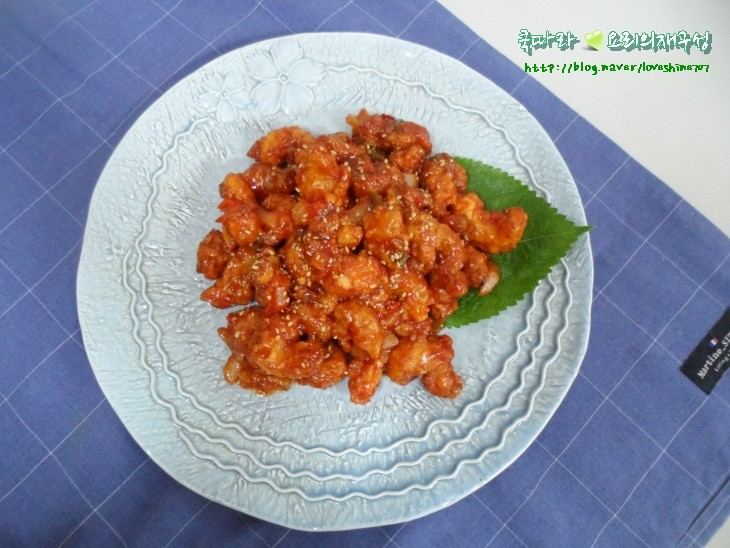
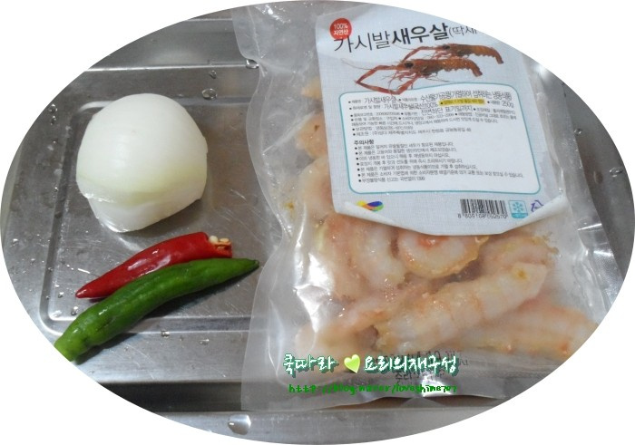
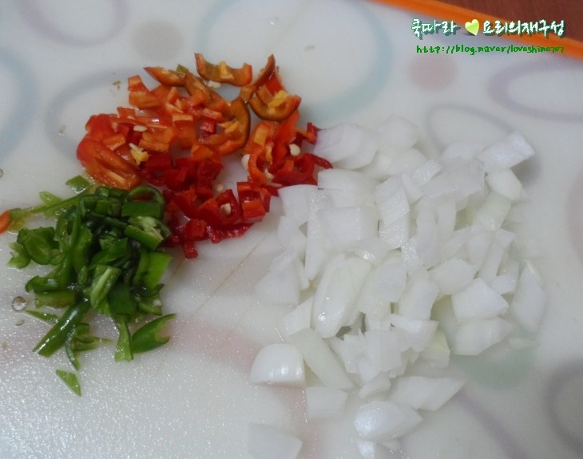
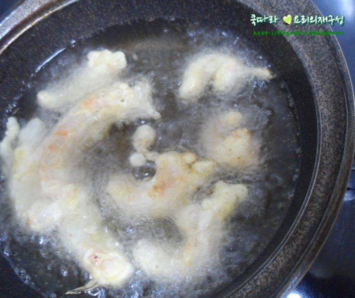
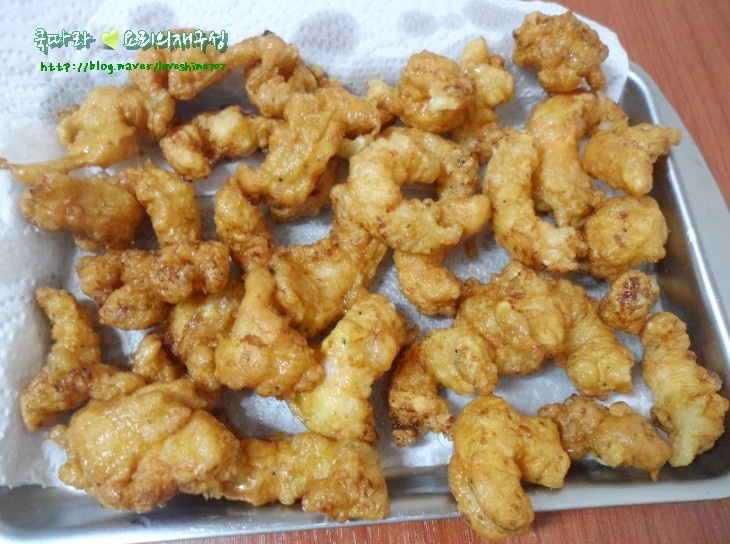
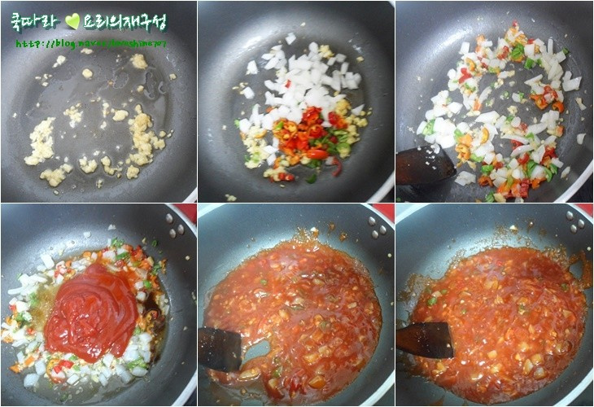
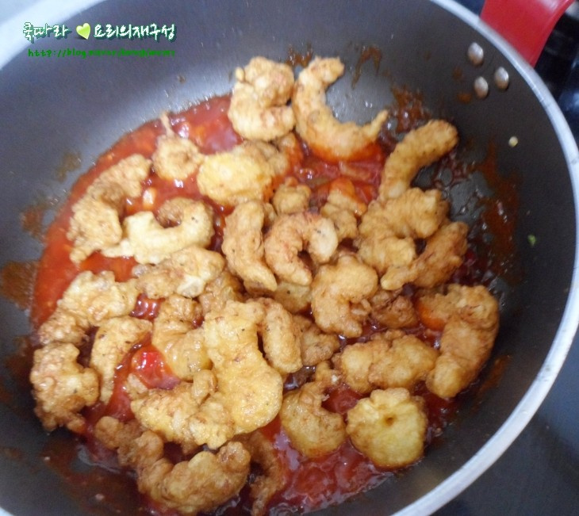
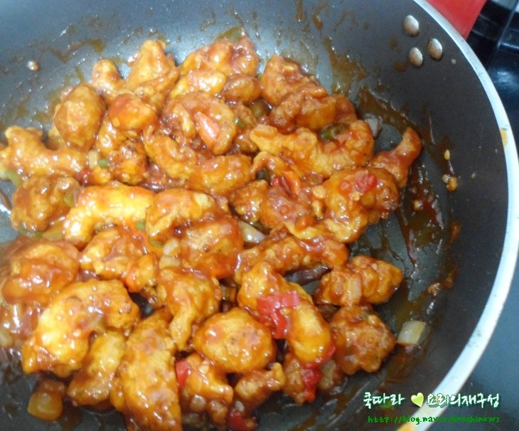
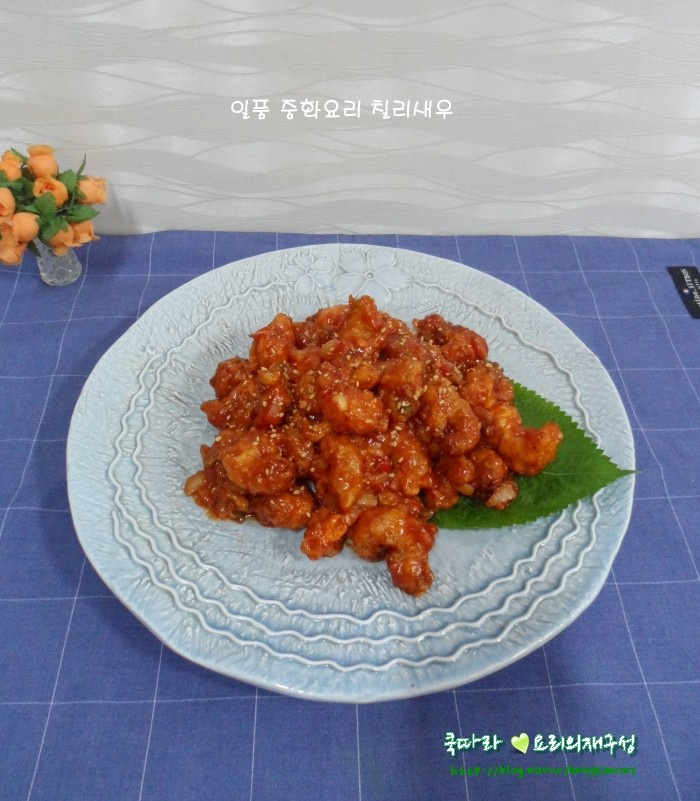

중국 음식 소개

중화요리:: 새우요리 깐쇼새우
깐쇼새우 만들기
고급 중화요리 홈메이드 칠리새우입니다. 집에서 칠리새우 만들어도 맛이 똑같진 않겠지만 얼추 비슷한 맛은 낼 수 있어 비싸게 사 먹을 필요 없겠더라구요ㅎ
조리법
깐쇼 새우 재료 목록
주재료
| 재료명 | 수량 |
|---|---|
| 딱 새우살 | 250g |
| 양파 | 1/5개 |
| 청양고추 | 1개 |
| 홍고추 | 2개 |
| 식용유 | 약간 |
| 전분 | 4스푼 |
| 달걀 | 1개 |
전체양념(칠리소스)
| 재료명 | 수량 |
|---|---|
| 다진마늘 | 0.5스푼 |
| 스윗 칠리소스 | 1스푼 |
| 케챱 | 3스푼 |
| 식초 | 3스푼 |
| 황설탕 | 2스푼 |
| 핫소스 | 2티스푼 |
| 간장 | 1스푼 |
| 굴소스 | 0.5스푼 |
| 후추 | 약간 |
새우 밑간
| 재료명 | 수량 |
|---|---|
| 맛술 | 1스푼 |
| 소금 | 1꼬집 |
| 후추 | 약간 |
깐쇼새우 조리 순서
1
재료 준비해 주세요~

2
껍질 벗겨 손질되어 있는 딱새우살에 맛술, 소금, 후추 뿌려 잠시 밑간해
두세요~

3
소스에 들어갈 고추는 가운데 고추씨 빼 잘게 다지고 양파도 잘게 다져
준비해 주세요~

4
새우에 전분 4스푼 넣고 달걀 1개 깨 넣고 조물조물해 반죽을 만들어
주세요~

5
180도 되는 온도에 새우 1마리씩 넣고 노릇한 색이 나도록 튀겨 주세요~

6
바삭한 식감 즐기려면 2번 튀겨내 주는게 좋답니다

7
팬에 식용유 2스푼 두르고 다진마늘 볶다가 향이 올라오면 고추와 양파
넣고 10초만 볶아 준 후 적힌 분량의 칠리소스 재료 케찹, 굴소스,
스윗칠리소스, 식초, 황설탕, 핫소스, 간장, 후추 넣고 바글 바글 끓여
칠리소스를 만들어 주세요~

8
불 끄고 칠리소스에 튀긴 새우를 모두 넣어 주세요~

9
칠리소스에 튀긴새우 재빨리 버무려 주면 칠리새우 완성!!

10
손님초대 요리로도 손색없는 일품 새우요리 칠리새우입니다
